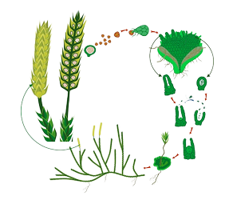
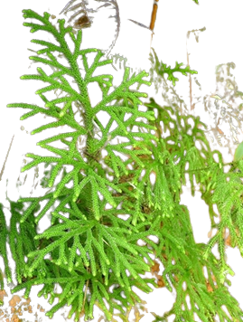
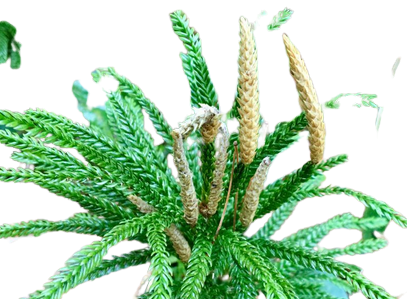
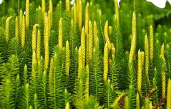
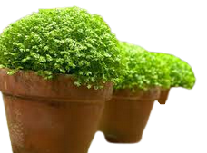

Los licopodios (Lycopodium) son plantas vasculares pertenecientes a las Pteridophyta. Se caracterizan por presentar los esporófilos (hojas portadoras de las estructuras que producen las esporas) en estróbilos erectos.El género Lycopodium está conformado por aproximadamente 40 especies y se ha dividido en 9 secciones , crece en sitios húmedos, con mucha sombra y gran contenido de materia orgánica.
Los licópodos se reproducen asexualmente por esporas. La planta tiene una fase sexual productora de gametos, y esto alterna en su ciclo de vida con la producción de esporas.El género Lycopodium es homospórico (las esporas sexuales no se diferencian morfológicamente). Los estróbilos (conos) se ubican en el ápice de las ramas y portan a los esporófilos. Los esporangios contienen el tejido esporógeno que es diploide. Posteriormente, estas células se dividen por meiosis para dar origen a las esporas haploides.
Para su reproducción las esporas de los licopodios deben permanecer un año de reposo y contar con la presencia de un hongo para su futuro desarrollo. De hecho, el hongo debe ser infectado por el propio gametofito. Este proceso puede durar hasta 15 años.
El tallo de los Lycopodium presenta una epidermis uniestratificada (de una sola capa de células). Por debajo de la epidermis, se configuran varias capas de células parenquimáticas formando la corteza. Luego se presenta una endodermis (tejido formado por una capa de células con paredes engrosadas) y dos a tres capas de periciclo (tejido que rodea a los tejidos conductores). El sistema vascular es del tipo plectostela (placas de xilema rodeadas de floema), que se considera primitivo dentro de las traqueofitas. Las hojas presentan epidermis superior e inferior, y los estomas (células especializadas en la transpiración e intercambio gaseoso) pueden estar en ambas superficies. Las células del mesófilo (tejidos entre ambas epidermis) son redondeadas y con espacios intercelulares.
Es una de las especies de licopodios más conocidas y es originaria de Puerto Rico. Es propia también de otras zonas cercanas a los trópicos y se encuentra ampliamente distribuida por todo el planeta tanto en la isla como en elevaciones medias de terreno. Sin embargo, prefiere los bosques húmedos
Este licopodio es una especie nativa de Estados Unidos. Es fácil de encontrar en los bosques templador, sobre todo los de coníferas y otros árboles de tipo caducifolios, que se encuentran ubicados por la parte este del país.
Esta especie es uno de los licopodios de tipo herbáceo que suele encontrarse con relativa facilidad en los bosques de coníferas situados en el hemisferio Norte del planeta.
Por último, esta planta licófita también nativa de la zona oriental de Estados Unidos y noroeste de México, es otra de los licopodios más representativos y fáciles de observar en el continente americano.
   